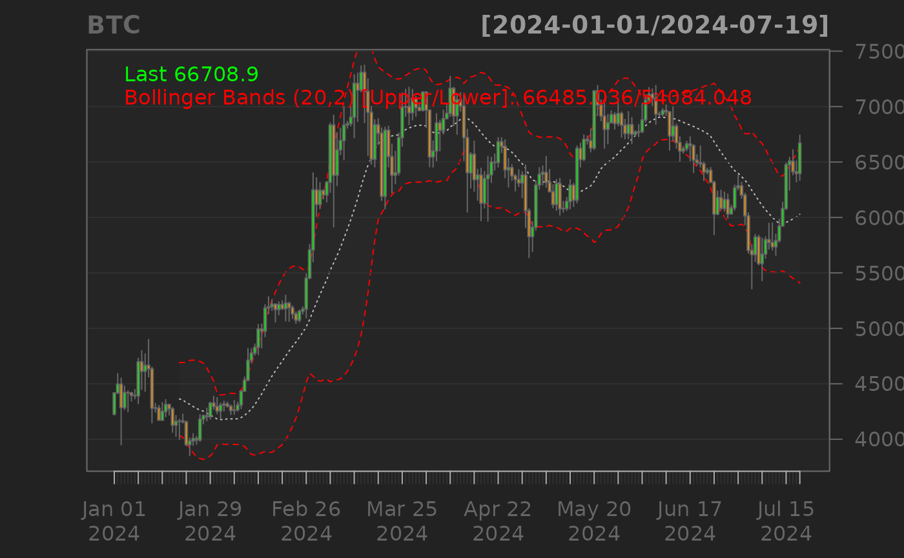

Cryptocurrency Market Data with {quantmod} and {TTR}
Source:vignettes/articles/05-article.Rmd
05-article.Rmd
## load libraries
library(cryptoQuotes){cryptoQuotes} were built with {quantmod} and {TTR} in mind. To demonstrate how {cryptoQuotes} works with these packages, we will use the following data,
## Get daily
## Bitcoin from
## the spot market
BTC <- get_quote(
ticker = "BTCUSD",
source = "kraken",
futures = FALSE,
interval = "1d",
from = "2024-01-01"
)Cryptocurrency and quantmod
The BTC can be passed into the charting functions, or be
used in the quantmod::tradeModel()-functions.
Building Cryptocurrency Trade Models
Below is an example on how to use the
quantmod::tradeModel()-function with the
BTC-object,
## 1) specify
## the model
lhs <- quantmod::Next(quantmod::OpCl(BTC))
rhs <- quantmod::Lag(quantmod::OpHi(BTC),0:3)
BTC_model <- quantmod::specifyModel(
formula = lhs ~ rhs
)
## 2) build the
## model
built_model <- quantmod::buildModel(
x = BTC_model,
method = 'lm',
training.per = range(head(zoo::index(BTC), 10))
)
## 3) trade the model
quantmod::tradeModel(built_model, leverage = 2)
#>
#> Model: lm1730981449.8078
#>
#> C.A.G.R.: 39.35% H.P.R.: 28.26%
#>
#> Returns by period summary:
#>
#> weekly monthly quarterly yearly
#> Max. 25.77% 48.73% 31.94% 51.46%
#> 3rd Qu. 8.02% 29.69% 22.19% 51.46%
#> Mean 2.19% 9.12% 15.49% 51.46%
#> Median -1.77% 1.88% 12.43% 51.46%
#> 2rd Qu. -5.24% -13.74% 7.27% 51.46%
#> Min. -21.19% -18.69% 2.10% 51.46%
#>
#> Period to date returns:
#>
#> weekly monthly quarterly yearly
#> 17.33% 12.43% 12.43% 51.46%Charting Cryptocurrency with {quantmod}
## chart the
## BTC with candlesticks
## and Bollinger BAnds
quantmod::chartSeries(
x = BTC,
type = "candlesticks",
TA = c(
quantmod::addBBands()
)
)
Cryptocurrency and {TTR}
Below is an example on how to use the BBands()-function
from {TTR},
# 1) calculate
# Bollinger Bands
indicator <- TTR::BBands(
quantmod::HLC(BTC)
)
# 2) add to the
# cryptocurrency quote
BTC <- cbind(
BTC,
indicator
)| index | open | high | low | close | volume | dn | mavg | up | pctB |
|---|---|---|---|---|---|---|---|---|---|
| 2024-07-14 | 59222.8 | 61373.5 | 59222.8 | 60810 | 1537.756 | 55169.562 | 59456.318 | 63743.075 | 0.618 |
| 2024-07-15 | 60810 | 64900 | 60704.5 | 64764.2 | 2989.713 | 55003.009 | 59555.733 | 64108.457 | 0.928 |
| 2024-07-16 | 64764.3 | 65416.3 | 62466 | 65088.7 | 3185.162 | 54749.989 | 59705.927 | 64661.864 | 0.966 |
| 2024-07-17 | 65077.1 | 66100.3 | 63853.1 | 64120 | 1952.563 | 54500.19 | 59865.557 | 65230.923 | 0.95 |
| 2024-07-18 | 64120.1 | 65097.1 | 63225.5 | 63960.7 | 1495.398 | 54366.588 | 60030.907 | 65695.225 | 0.859 |
| 2024-07-19 | 63960.7 | 67429 | 63350 | 66708.9 | 2068.886 | 54084.048 | 60284.542 | 66485.036 | 0.947 |